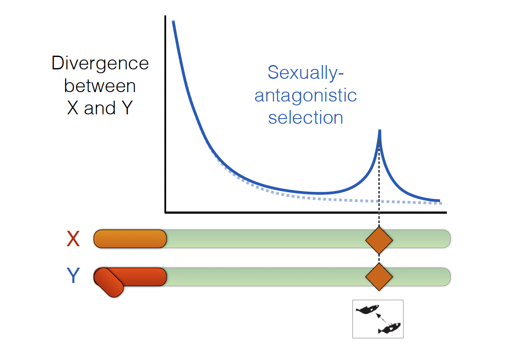
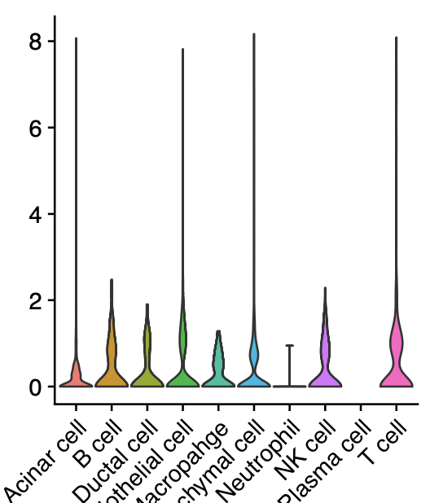

Working papers
2017-01-25

№ 1. Sexually antagonistic selection and sex chromosome evolution in Stickleback.
Changde Cheng, Andrius J. Dagilis, Jason M. Sardell, Asano Ishikawa, Jun Kitano, Matthew P. Josephson, Catherine L. Peichel, Mark Kirkpatrick.
Submission to the 2017 Society for Molecular Biology & Evolution meeting at Austin, Texas, US.
2024-11-07
№ 2. Transcriptome alteration in pancreatic neuroendocrine tumors among those living with adverse SDOH.
Andrea Gillis\(^{\ast}\), K. Kerrick Akinola\(^{\ast}\), Brendon Herring, Isra Elhussin, Elquis Castillo, Stuart Phipps, Vinodh Srinivasasainagendra, Weisheng Chen, Rachael Guenter, Tiwari Hemant, Dai Chen, Upender Manne, Herbert Chen, Clayton Yates, J Bart Rose, Changde Cheng, Smita Bhatia.
Submitted.
2024-12-04
№ 4. Paricalcitol and Hydroxychloroquine modulate extracellular matrix and enhance chemotherapy efficacy in pancreatic cancer.
Dhana Sekhar Reddy Bandi, Sujith Sarvesh, Jeremy Foote, Changde Cheng, Mehmet Akce, Ganji Purnachandra Nagaraju, Bassel F. El-Raye.
Submitted.
2024-12-08

№ 5. Antibody deficiency accelerates tumorigenesis in genetically engineered mouse models of pancreatic cancer.
Foote JB \(^{\dagger}\), Sarvesh S, Al Diffalha S, Crossman DK, Changde Cheng, Kim M, Rose BJ, Klug CA.
Submitted.
2025-03-10
№ 10. Marrow Minded: Characterizing Differences between Calvarium and Femur Bone Marrow Microenvironment in Diabetes.
Ashley Rennhack, Micheli Sielski, Bright Asare-Bediako, , Emory Johnson, Fadeela Sheini, Sergio Li Calzi, Changde Cheng, Maria B. Grant.
Submitted.
2025-05-20
№ 11. Induction of a Renal Developmental Cell State is Associated with Chemotherapy Resistance in Favorable-Histology Wilms Tumor.
Andrew M. Fleming; Carolyn M. Jablonowski; Hongjian Jin; Surbhi Sona; Ha Won Lee; Karissa M. Dieseldorff Jones; Changde Cheng; Beisi Xu; Christopher L. Morton; Mary A. Woolard; Prahalathan Pichavaram; Daniel B. Gehle; Sivaraman Natarajan; Kiran Kodali; Vishwajeeth Pagala; Anthony A. High; Yogesh Kumar; Ti-Cheng Chang; John Easton; Scott R. Olsen; Geoffrey Neale; Emilia M. Pinto; Jerold E. Rehg; Teresa Santiago; Rani E. George; Xiaotu Ma; Gerard P. Zambetti; Andrew M. Davidoff; Taosheng Chen; Gang Wu; Xiang Chen; Jun Yang; Andrew Jackson Murphy
Submitted.
\({\ast}\): First author(s)
\({\dagger}\): Corresponding author(s)
Lab member